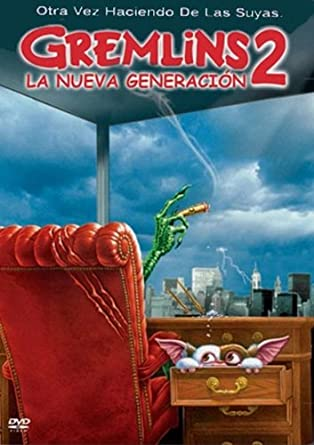

Gremlins 2:
Resumen:
Un gran edificio de oficinas se levanta sobre las ruinas de la tienda demolida del señor Wing. Un científico captura a Gizmo e intentará crear una nueva generación de feroces gremlins.
Tras conocer las cifras de recaudación de "Gremlins" en todo el mundo (153 millones de euros), Steven Spielberg, productor de la primera entrega, encargó de nuevo a Joe Dante esta inevitable secuela. El realizador contó con los protagonistas de la primera parte, Zach Calligan y Phoebe Cates, e introdujo al veterano Christopher Lee en el papel del científico sin escrúpulos. Pese a sus soberbios efectos especiales y a la acentuación de la vertiente cómica de la historia, el filme no logró conseguir los resultados de la primera, aunque sus cifras fueron más que notables.
Como curiosidad, Warner Bros. quiso estrenar esta secuela la misma semana que Touchstone Pictures colgaba en cartelera "Dick Tracy". El motivo fue que la productora quería así aplacar el éxito de la cinta protagonizada por Warren Beaty y evitar de este modo que superase el récord de recaudación de una película el primer fin de semana, que en aquel entonces ostentaba "Batman" (1989), de la Warner Bros.
Descarga - Gremlins 2